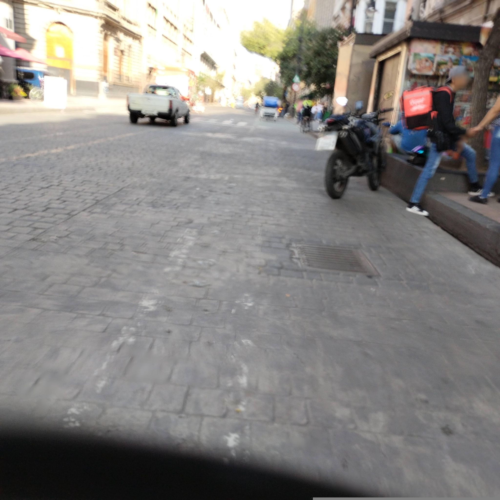

Seed
- The orange Rappi cube on the courier's back — almost architectural in how it rides above his shoulders.
- A machined drain grate set precisely into a field of rough, hand-cut paving stone.
- The deep ochre of a painted arch in the left-side building, half-blown by the morning light.
Wander
The Rappi backpack is almost exactly a cube, which is a weirder choice than it looks — nothing about carrying food demands a cube, and a soft duffel would insulate just as well. The cube is there because it reads as *volume*, as *commerce*, as a little warehouse riding a human spine. In 19th-century London the sandwich-board man was a derided figure, paid pennies to walk Oxford Street wearing two planks advertising patent medicine or theatrical runs, and commentators worried openly about a class of men reduced to the armature for a sign. The Rappi courier is the sandwich-board man reinvented with better ergonomics and an algorithm — only now he pays a deposit for the privilege of wearing the board, and the board is warmer and more semiotically dense. (This is how gig platforms extract a second rent: first from labor, then from the surface area of the laborer.) There's a lineage worth tracing from medieval guild signs hanging above a workshop door, to the shop itself, to the uniform, to the mobile uniform, to the cube — each step moves the brand closer to the body and further from the premises. The endpoint isn't hard to imagine: the premises dissolve entirely and what remains is a courier wearing the company, moving through a city that has outsourced its storefronts to residential kitchens. Which makes the real urban form of platform logistics not the dark kitchen but the courier himself — a walking, thermally-insulated franchise. Somewhere in here is the question of whether the cube is a *building* or a *suitcase*, and I don't think the answer is stable; it depends on whether you're looking at him from the sidewalk or from the order confirmation screen.
Branch
Guild signs → neon signs → Times-Square-scale spectacle → body-scale spectacle: the history of advertising as a slow migration of the sign from the architecture to the person.
Chose D
The sign-on-body drift has said its piece; a right turn off the main axis should drop the scale down a notch and give me a smaller street's worth of surface — doorways, thresholds, hand-lettered stuff — to knock the thinking sideways instead of letting it keep orbiting the courier.